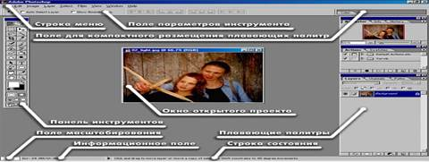
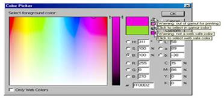
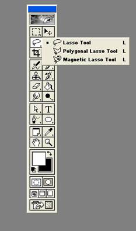
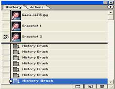
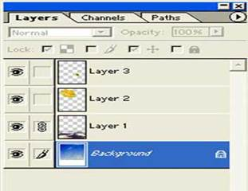

1. Программа интерфейсі
2. Файлдарды жүктеу мен импорттау
3. Adobe Photoshop редакторының құрал-саймандары
Программа интерфейсі. Программаның негізгі басқару элементтері Меню қатары мен Саймандар панелінде жинақталған. Бұдан басқа Adobe компаниясының программаларында ерекше сұхбат терезелері – саймандар палитрасы қолданылады.
Файлдарды жүктеу мен импорттау. Photoshop графикалық редакторы түзу үшін емес суреттерді өңдеу үшін арналғандықтан, онымен жұмысты жүктеуден (файл - ашу) командасымен немесе дайын бейнелерді импорттаудан бастайды.
Импорттау деп – сканерден, цифрлық фотокамерадан немесе басқа да енгізу құрылғыларынан алынған бейнені енгізуді айтады. Импорттау файл – импорттау командасы арқылы орындалады. Графикалық редактордың сыртқы құрылғылармен байланысы TWAIN стандарты арқылы жүзеге асырылады.
Файл туралы мәлімет алу. Көптеген графикалық бейнелермен операция жасауда бейнелердің негізгі параметрлерін білу өте маңызды. Оларды Бейне өлшемі (Размер изображение) сұхбат терезесінде анықтауға болады. Ол бейне (Изображение – Размер изображение) – бейне өлшемі командасы арқылы ашылады. Бұл терезеде ені және биіктігі (пикселдермен) және Размер печатного отписка (см-мен) сияқты параметрлер келтірілген. Экрандық өлшемдер физикалық өлшемдермен рұқсат ету (Разрешение) параметрлерімен байланысты. Файлдың өлшемі осы параметрлерге тәуелді.
Adobe Photoshop редакторының құрал-саймандары. Құралдар панелі бейнелермен жұмыс істеудегі ең негізгісі болып табылады. Негізгі құралдар, құралдар панелінде 4 топқа біріктірілген. Photoshop программасының ерекшелігі құралдар панелінде альтернативті құралдардың болуы. Мұндай құралдардың кішкене үшбұрышты арнайы белгілері бар. Осындай белгіде тышқанды басып курсорды апарсаңыз қосымша құралдары бар: сызғыш , тағы басқа да құралдар.
1.Белгілердің бірінші тобын обьектімен жұмыс жасауға арналған құралдар құрайды. Область аймақ және Лассо құралдары арқылы бейне аймағын ерекшелеп, (Перемещение) Ауыстыру құралының көмегімен ерекшеленген аймақты жылжытып, көшірмесін алуға да болады.
Сиқырлы таяқша (Вольшебное палочка) құралы аймақты түс белгісіне қарай автоматты түрде ерекшелеуге арналған. Сиқырлы таяқша мен Лассоны графикалық обьектілердің күрделі контурын дәл алу үшін қолданады.
2.Сурет салу үшін арналған құралдар тобына Аэрограф, кисть (қылқалам), карандаш, Ластик (өшіргіш) жатады. Штамп құралын набивка операциясы үшін, яғни оның көмегімен суреттің зақымдалған элементтерін қалпына келтіру ыңғайлы. (Мысалы: ескі суреттерді өңдеуде), зақымдалмаған бөліктерден бейнелерді көшіру арқылы.
Палец құралы размывка опериясы үшін қолданылады. Размытие /Резкость құралдары бөлек бөліктердің қанықтылығын басқаруға, ал Осветлитель / Затемнитель / Губка құралдарын түстің қанықтылығын реттеуге арналған. Губка Отмывка операциясы үшін арналған.
3. Үшінші топтың құралдарына жаңа обьектілерді құруға, соның ішінде текстік обьектілерді құруға арналған.
Перо және оның альтернативті құралдары қисық контурларды құру мен редакторлеуге арналған. Текст инструментімен жазбаларды орындайды. Бұнымен қоса мұнда Windows операциялық жүйесінде орнатылған шрифтілер қолданылады. Линия құралы түзулердің кесіндісін салуға арналған. Заливка және Градиент ерекшеленген бөліктерді негізгі түстердің бірімен немесе түстер арасында жайлап өту арқылы қолайлы түс таңдауға арналған. Қолданылғандардың тізімінен түсті дәл таңдауға Пипетка құралы көмектеседі.
4.Соңғы топты көруді басқару құралдары құрайды. Масштаб құралы суреттің үлкейтілген фрагменттерімен жұмыс істеуге мүмкіндік береді, ал рука құралын программаның терезесінің шегінен шығып кеткен суреттерді жылжытуға қолданылады.
Құралдар палитрасы.Adobe компаниясы шығарған программасында ерекше түрдегі сұхбат терезелері жиі қолданылады. Олар палитралар деп аталады және басқарудың кейбір ортақ элементтеріне ие. Палитралар негізгі құралдардың қызметін дайындау және бейнемен және оның файлымен операция жасау үшін қолданылады.
Photoshop редакторының негізгі палитра панелі қолданылады. Палитраны ашу меню қатары арқылы орындалады. Терезе пункті Спрятать / Показать – Жасыру / Көрсету пунктерін құрайды. Солардың көмегімен басқару орындалады. Экранда барлық палитраларды ұстау міндетті емес. Жұмыс барысында керек емес палитраларды экраннан жоюға, өшіріп тастауға да болады.
Жабу кнопкасында шерту палитраны экраннан өшіреді. Палитраны экранға қайта шақыру. Окно(Терезе) менюіндегі Показать (Көрсету) командасы арқылы орындалады. Оң жақтағы үшбұрышты бағдаршаға шерту қосымша контекстті менюді шақыруға мүмкіндік береді. Ол арқылы палитраны дайындауға және оның мүмкіндігін кеңейтуге болады. Кейбір палитралар командалық түймелерге, не олардың тізімдеріне енгізу алаңдарын және тағы басқа да басқару элементтерін айқындайды.
Палитралардың Windows операциялық жүйесіндегі сұхбат терезелерінен негізгі айырмашылығы жұмыс ортасын өз талғамына қарай келтіруге мүмкіндік береді. Жаңа палитраларды курсормен бір палитраны іліп алу арқылы жасауға болады. Егер де экранның бос жеріне орналастырсақ, онда ол тәуелсіз палитраға айналады.


1-сурет. Adobe Photoshop программасының жұмыс үстелі және түстер арасында жайлап өту арқылы қолайлы түс таңдау терезесі.

2-сурет, Adobe Photoshop программасының құрал-саймандар панелі.
Мұнда неше түрлі мүмкіндіктерге ие құралдар бар. Әрбір құралдың бірнеше атқаратын қызметтері бар. Саймандар панелінде сызуға, өшіруге, алып тастауға, бояға, жазбалар жазуға, белгілеуге мүмкіндік беретін құралдар жеткілікті.

Adobe Photoshop программасында жұмыс жасағанда онда атқарылған іс-әрекеттің бәрі History палитрасында тізімде тұрады. History палитрасы арқылы кеткен қателіктерді түзеуге немесе атқарылған жұмыстың орындалу барысын тексеруге болады.

Қабат (Слой), Канал, Контурлар палитралары бір сұхбат терезесінде орналасқан. Осы құралдардың көмегімен біз Фильтр қызметін қолдана отырып, керекті суретімізді өңдеп аламыз.
Zoom (Масштаб) құралы. Photoshopта Zoom (Масштаб) құралы орналасқан. Бұл құралды саймандар панелінің төменгі тұсында ұлғайтқыш әйнек суреті арқылы табуға болады. Суретте көрсетілгендей бұл құрал бейненің масштабтық өлшемдерін басқаруға мүмкіндік береді. Масштаб арқылы ұлғайтқанда сізге ол үлкен суретке айналғандай болады, бірақ негізінде оның өлшемі өзгермейді. Құралдар панеліндегі Zoom (Масштаб) құралын тауып оны шертеміз. Тышқан көрсеткішіндегі ұлғайтқыш әйнектегі «қосу» белгісі құралдың бейнені ұлғайтуға дайын екендігін білдіреді. Терезенің ортасына «қосуды» орналастырып, тышқанның сол жақ батырмасын бассақ дене 100-ден 200 % ға дейін үлкейді. Е Егер батырманы қайта басатын болсақ енді бейне 300%-ға ұлғаяды.
Батырмадағы «қосу» батырмасын баса беру арқылы бейнені 200, 300, 400, 500, 600, 700, 800, 1200, 1600%-ға дейін үлкейте аламыз. 1600%-тік үлкею бейненің шекті ұлғаюы болып саналады. Alt пернесін басқанда ұлғайтқыш әйнектегі «қосу» таңбасы «азайту» таңбасына айналады. Енді құралды кішірейту мақсатында қолданамыз. Ұлғайған бейнелерді «азайту» таңбасымен қайтадан бастапқы масштабы 100%-дық қалпына келтіре аламыз.
Масштабты қолдана отырып өңдеп жатқан бейненің кем-кетіктерін түзеуге, бейнені жіті бағдарлауға таптырмас құрал болып табылады. Сондай-ақ масштабты қолдануда Ctrl пернесін «+» немесе «−» таңбасымен қосып басу арқылы уақыт ұта аламыз. Мұнда Ctrl+«+» ұлғайтуды, ал Ctrl+«−» кішірейтуді білдіреді.
Осы масштаб командасын Z пернесі арқылы шақыра аламыз.
Терезені үлкейту үшін оның жиектеріне тышқан курсорын апарып, бағдарша пайда болған кезде оны созып үлкейтуімізге немесе кішірейтуімізге болады.
Adobe Photoshop программасы суреттермен жұмыс жасағанда кейбір күрделі жұмыстарды жедел орындауға мүмкіндік береді. Оның бас мәзір (меню) қатарында File (Файл), Edit (Редакторлау), Image (Көрініс), Layer (Қабат), Select (Белгілеу), Filter (Фильтр), View (Түр), Window (Терезе), Help (Көмек) командалық бөлімдері орналасқан.
Палитралар тобы жұмыс үстелінің сол жақ қапталында, ал саймандар панелі оң жақ қапталда орналасады. Программаның басқарушы элементтері палитраларда тұрады. Мысалы көп қолданылатын Color (Түс), Layers (Қабаттар) секілді функциялары осында жинақталған. Жұмыс барысында суреттерді Файл→Ашу командасымен жұмыс үстеліне шығарып аламыз.
Adobe Photoshop программасы ескірген, әрі бетінің әрі кеткен фотосуреттерді түрлі-түсті етіп сурет бейнелерін қалпына келтіреді. Бірнеше суреттегі керекті бейнелерді бір сурет ішіне орналастыруға, сурет жиектерін қаламмен өрнектегендей етуге, фотосуреттерді қолмен салынған суретке айналдыруға,мөлдір жазулар жазуға сондай-ақ жазылған мәтіннен жалын шығарып қоюға да болады. Бұл Adobe Photoshop программасының мүмкіндіктерінің бірегейі ғана. Сурет өңіне жарықтандырғыштар арқылы қошқыл, күңгірт суреттер анық етіліп шығарылады.
Қарапайым қолданылыста Adobe Photoshop, Corell Draw, Adobe Illustrator программалары кеңінен таралған. Adobe Photoshop программасында Adobe ImageReady қосымшасы болады.
Бақылау жұмысы: